LLaVA(2)-Improved Baselines with Visual Instruction Tuning
论文地址：https://arxiv.org/abs/2310.03744
论文代码：https://github.com/haotian-liu/LLaVA
LLaVA-Improved Baselines with Visual Instruction Tuning(V1.5)
摘要
本文在LLaVA框架下，首次系统地研究了多模态模型的设计选择，研究是在受控条件下进行的。研究表明，LLaVA中的全连接视觉-语言连接器具有出色的性能和数据效率。在此基础上，通过以下简单改进建立了更强的基准模型：
- 使用CLIP-ViT-L-336px作为视觉编码器，并配备MLP投影层；
- 添加面向学术任务的VQA数据集，并优化响应格式提示。
改进后的模型在11项基准测试中达到了最新的性能水平。最终的13B模型仅使用了120万公开数据，在单台8卡A100机器上约1天即可完成训练。此外，我们还在多模态模型的一些开放性问题上进行了初步探索，包括更高分辨率输入的扩展、组合能力以及模型幻觉等问题。
1. 引言
大规模多模态模型（LMMs）在研究领域中变得越来越流行，因为它们是通用型助手的关键构建模块。最近对LMM的研究逐渐集中在一种被称为视觉指导调整（Visual Instruction Tuning）的核心概念上。这些研究结果令人印象深刻，例如LLaVA和MiniGPT-4在自然指令跟随和视觉推理能力方面展示了出色的表现。为了更好地理解LMM的能力，研究者提出了多个基准测试。近年来的研究进一步通过扩大预训练数据、指令跟随数据、视觉编码器或语言模型等方式展示了性能的提升。
LLaVA架构还被广泛应用于不同的下游任务和领域，包括区域级和像素级的理解、生物医学助手、图像生成以及对抗性研究。
尽管有许多基准测试和技术进步，目前仍不清楚如何设计最佳的训练方法来使LMM成为通用型助手。例如：
- LLaVA在对话风格的视觉推理任务上表现优异，甚至优于后来的方法如InstructBLIP在此类基准测试上的表现；
- 而InstructBLIP在需要单词或短句回答的传统VQA基准测试中表现更为出色。
由于两种模型在架构和训练数据上的显著差异，其能力差距的根本原因尚不明确，尽管已有一些猜测，例如训练数据量的大小、Qformer等重采样器的使用等。
为此，本文在受控条件下对LMM的设计选择进行了首次系统研究。研究基于LLaVA展开，从输入、模型和数据三个角度进行优化，构建了改进的多模态模型基准。
首先，我们发现LLaVA中的全连接视觉-语言连接器具有出色的数据效率，并在此基础上建立了更强、更实用的基准模型。研究表明，两项简单的改进：
- ⭐使用MLP跨模态连接器
- ⭐引入学术任务相关的数据（如VQA数据）——对于LLaVA框架是独立的
当与LLaVA结合使用时，可显著提升多模态理解能力。相比之下，InstructBLIP或Qwen-VL需要对数亿甚至数十亿的图文配对数据进行训练，而LLaVA使用了最简单的多模态架构设计，仅需在60万对图文配对数据上训练一个简单的全连接投影层即可。最终模型可在一台配备8张A100显卡的机器上约1天内完成训练，并在广泛的基准测试上取得了最新的性能。同时，与使用内部数据的Qwen-VL不同，LLaVA仅使用公开可用的数据。
接下来，我们对大规模多模态模型的一些开放性问题进行了初步探索。研究发现：
- ⭐高分辨率图像输入的扩展。我们表明LLaVA的架构可以通过简单地将图像划分为网格来适应更高的分辨率，保持数据效率的同时提高了模型的细节感知能力，并减少了幻觉现象；
- ⭐组合能力。研究发现大规模多模态模型能够泛化至组合能力。例如，将长文本语言推理与短视觉推理结合的训练可以提高模型在多模态问题上的写作能力；
- ⭐数据效率。研究表明，将LLaVA的训练数据混合随机下采样至75%并不会显著降低模型性能，表明通过更复杂的数据压缩策略可能进一步提升LLaVA高效的训练流程；
- ⭐数据扩展。研究提供了关于数据粒度扩展与模型能力提升之间关系的实证证据，表明提高能力的同时需要避免引入如幻觉等副作用。
总之，本文对大规模多模态模型的训练进行了系统研究，并提出了一种简单但有效的方法，用以在多任务学习和平衡扩展中优化大规模多模态模型的设计。改进后的基准模型LLaVA-1.5仅使用公开数据，在11项广泛的任务中达到了最新性能，并且在数据效率上显著优于现有方法。通过重新审视传统方法和探索视觉指导调整中的开放性问题，我们为打造更强大、更可靠的大规模多模态模型奠定了基础。我们希望这些改进和易于复现的基准能够为未来开源LMM的研究提供参考。
2. 相关工作
2.1 指令跟随的大规模多模态模型（LMMs）
常见的多模态模型架构包括：
- ⭐一个预训练的视觉骨干网络用于编码视觉特征、
- ⭐一个预训练的大语言模型（LLM）用于理解用户指令并生成响应，
- ⭐以及一个视觉-语言的跨模态连接器，用于将视觉编码器的输出对齐到语言模型的嵌入空间。
如图1所示，LLaVA可能是现有LMM中最简单的架构。可选地，一些视觉重采样器（如Q-former）被用于减少视觉特征块的数量。
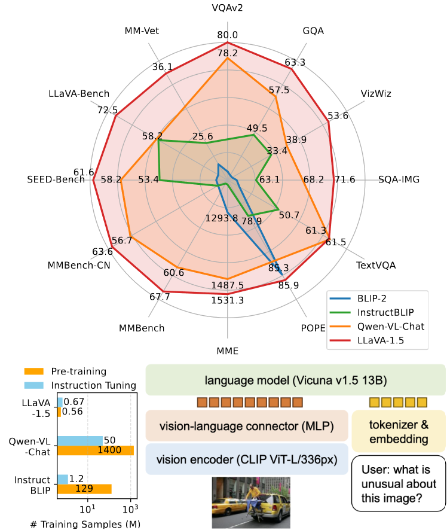
通常，指令跟随的LMM训练包括两个阶段：
- 视觉-语言对齐预训练阶段：这一阶段利用图文配对数据将视觉特征与语言模型的词嵌入空间对齐。早期的工作使用了相对较少的图文配对数据（如∼60万或∼600万），而一些最新研究则在大规模图文配对数据（如1.29亿和14亿）上对视觉-语言连接器进行了预训练，以最大化LMM的性能。
- 视觉指令调整阶段：这一阶段对模型进行视觉指令微调，使其能够响应涉及视觉内容的用户多样化请求。
此外，使用网格化方法处理高分辨率图像的研究在近期研究中也有涉及。
2.2 多模态指令跟随数据
⭐在自然语言处理（NLP）领域，研究表明指令跟随数据的质量对最终模型能力有显著影响。对于视觉指令调整，LLaVA是第一个利用仅文本的GPT-4扩展现有COCO数据集的研究，该扩展数据集包含三种类型的指令跟随数据：对话式问答、详细描述和复杂推理。LLaVA的数据处理流程还被用于扩展文本理解、大规模数据集以及区域级对话。
InstructBLIP通过结合学术任务导向的VQA数据集，进一步增强了模型的视觉能力。然而，研究发现这种简单的数据融合可能会导致模型过拟合于VQA数据集，从而难以在自然对话中表现出色。⭐为了缓解这一问题，研究者提出利用LLaVA的数据处理流程将VQA数据集转换为对话风格。这种方法虽然在训练中证明了其有效性，但在数据扩展上引入了额外复杂性。
在NLP中，FLAN家族表明，将大量学术语言任务添加到指令调整中可以有效提高模型的泛化能力。受到这一点的启发，本文探讨了多模态模型在自然对话任务和学术任务之间难以平衡的根本原因。
第三章 方法
3.1 预备知识
作为视觉指令调整的奠基性研究，LLaVA展示了卓越的视觉推理能力，在真实场景的视觉指令任务上超越了许多后续模型。LLaVA使用单个线性层将视觉特征投影到语言空间，并优化整个大语言模型（LLM）以适应视觉指令调整。然而，LLaVA在学术基准测试中表现欠佳，这些测试通常要求简短的回答（如单词），并且由于训练数据分布中缺少这类数据，LLaVA倾向于对是/否问题回答“是”。
另一方面，InstructBLIP率先将学术任务导向的数据集（如VQA-v2）与LLaVA-Instruct结合，从而在VQA基准测试中实现了性能提升。InstructBLIP在1.29亿对图文配对数据上预训练了Qformer，并仅微调了面向指令的Qformer以适应视觉指令调整。然而，近期研究表明，在现实视觉对话任务中，它的表现不及LLaVA。具体而言，如表1a所示，InstructBLIP可能会过拟合于短答案的VQA训练集，即便在需要详细回答的请求中也如此。
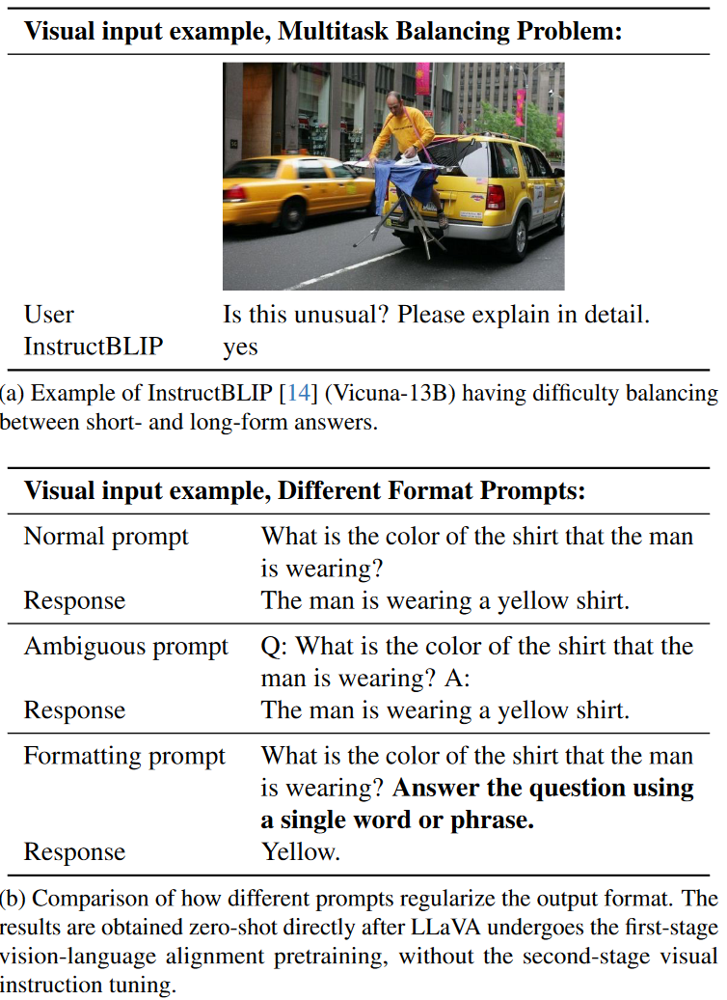
- InstructBLIP加入学术任务导向的数据集VQA-v2，但是容易过拟合短答案的VQA训练集
3.2 响应格式提示
⭐研究发现，InstructBLIP等方法在短答案和长答案VQA任务之间难以平衡的原因主要有以下两点：
- 响应格式提示模糊：例如“Q: {问题} A: {答案}”的提示未能清晰指示所需的输出格式，这会使LLM在自然视觉对话中行为上过度偏向短答案。
- 缺乏对LLM的微调：这种问题由于InstructBLIP仅微调Qformer而加剧。它依赖Qformer的视觉输出来控制LLM生成的输出长度（如前缀调整），但由于Qformer的容量有限，相较于LLMs（如LLaMA），其能力可能不足。
为了解决这些问题并使LLaVA能够更好地处理短答案，同时克服InstructBLIP的局限性，本文提出了一种单一的响应格式提示，明确指示输出格式。对于需要短答案的VQA问题，这种提示被添加在问题末尾，例如：“回答问题时仅使用一个单词或短语。”我们发现，当LLM经过这样的提示微调后，LLaVA能够根据用户指令正确调整输出格式（见表1b），而无需借助ChatGPT对VQA答案进行额外处理，从而实现对多种数据源的扩展。如表2所示，仅通过在训练中包含VQAv2，LLaVA在MME上的性能显著提升，并超过了InstructBLIP 111分。
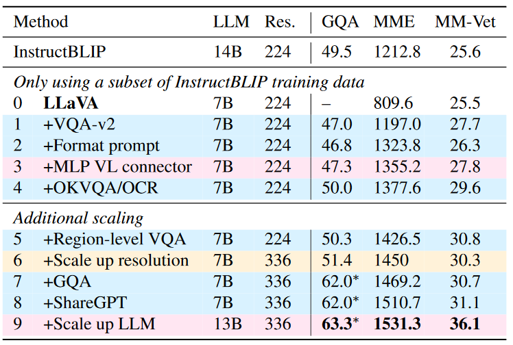
- 对于需要短答案的VQA问题，添加在问题末尾一种提示，例如“回答问题时仅使用一个单词或短语。”
3.3 数据和模型的扩展
⭐MLP视觉-语言连接器：受到自监督学习中从线性投影切换到MLP提高性能的启发，我们发现通过两层MLP提升视觉-语言连接器的表示能力，可以增强LLaVA的多模态能力，相较于原始线性投影方案效果更优。
⭐面向学术任务的数据：我们进一步加入了额外的学术任务导向数据集（如VQA、OCR和区域级感知数据），以多种方式增强模型能力（见表2）。具体来说，我们引入了InstructBLIP中使用的四个额外数据集：开放知识VQA（OKVQA，A-OKVQA）和OCR（OCRVQA，TextCaps）。将A-OKVQA转换为多选题，并使用特定的响应格式提示：“直接用选项的字母回答。”在仅使用InstructBLIP数据集子集的情况下，LLaVA已在所有三个任务上超越InstructBLIP，表明LLaVA的设计具有较高的效率。此外，我们发现进一步添加区域级VQA数据集（如Visual Genome，RefCOCO）可提升模型对细粒度视觉细节的定位能力。
⭐额外扩展：我们将输入图像分辨率扩展到336²，以便LLM能够清晰“看到”图像的细节。通过更换视觉编码器为CLIP-ViT-L-336px（CLIP支持的最高分辨率），并加入GQA数据集作为额外的视觉知识来源。同时，我们结合了ShareGPT数据并将LLM扩展到13B，在MM-Vet基准测试上的结果显示，当LLM扩展到13B时，性能提升最为显著，这表明基础LLM的能力对视觉对话任务至关重要。
最终模型被命名为LLaVA-1.5（表2最后两行），显著优于原始的LLaVA。
计算成本：对于 LLaVA-1.5，我们使用相同的预训练数据集，并保持训练迭代和批量大小与 LLaVA的指令调整大致相同。由于图像输入分辨率提高到 ，LLaVA-1.5 的训练时间是 LLaVA 的 ∼2 倍：使用 8× A100 进行 ∼6 小时的预训练和 ∼20 小时的视觉指令调整。
3.4 高分辨率扩展
在第3.3节中，我们观察到扩展输入图像分辨率可以提升模型能力。然而，现有开源的CLIP视觉编码器的分辨率上限为336²，这使得通过简单替换视觉编码器(如第二节所示)来支持更高分辨率变得不可能。在本节中，我们提出了一种方法，将LMM扩展到更高分辨率，同时保持LLaVA-1.5的数据效率。
当使用 ViT作为视觉编码器时，为了扩大分辨率，以前的方法大多选择位置嵌入插值并在微调期间使 ViT 主干适应新的分辨率。然而，这通常需要在大规模图像文本配对数据集上对模型进行微调，并将图像的分辨率限制为 LMM 在推理过程中可以接受的固定大小。
⭐相反，如图 2 所示，我们通过将图像划分为多个小图像块（每个分辨率为视觉编码器的原始训练分辨率），并分别对其进行编码。获取每个小块的特征图后，将其合并为一个目标分辨率的单一大特征图，最终输入到LLM中。为了为LLM提供全局上下文并减少分割-编码-合并操作带来的伪影，我们额外将一个降采样图像的特征与合并特征图拼接。这种方法允许输入扩展到任意分辨率，同时保持LLaVA-1.5的数据效率。我们将最终的模型命名为LLaVA-1.5-HD。
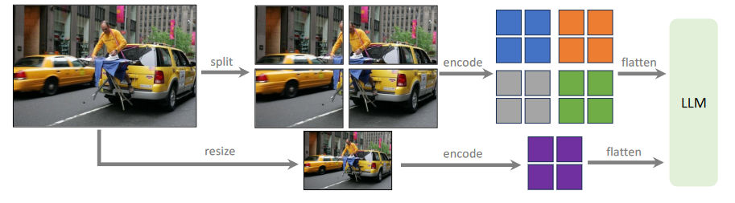
4. 实验评估
4.1 基准测试
我们在一系列学术任务导向的基准测试和最近提出的指令跟随多模态模型（LMMs）的基准测试上对LLaVA-1.5进行了评估，共计12项基准测试。
- 学术任务导向基准测试：
- VQA-v2 和 GQA：评估模型在开放式短答案问题上的视觉感知能力。
- VizWiz：包含8000张图像，用于评估模型在视觉障碍用户提出的问题上的零样本泛化能力。
- ScienceQA（图像子集）：包含多选题，用于评估科学问答任务的零样本泛化能力。
- TextVQA：测试模型在文字丰富的视觉问题中的表现。
- 指令跟随LMM基准测试：
- POPE：评估模型在COCO中三个子集上的幻觉程度（随机样本、常见样本、对抗性样本），报告F1分数。
- MME-Perception：通过是/否问题评估模型的视觉感知能力。
- MMBench 和 MMBench-CN：分别测试模型在多选答案上的鲁棒性（中英文版本）。
- SEED-Bench：评估模型在图像和视频上的表现（视频使用中间帧进行准确性测试）。
- LLaVA-Bench-in-the-Wild 和 MM-Vet：评估模型在多样任务上的视觉对话能力，包括回答的正确性和有用性，使用GPT-4进行评估。
12项基准测试
4.2 结果
我们发现，尽管LLaVA-1.5使用了比其他方法少得多的预训练和指令微调数据，但在12项基准测试中整体性能最佳。
- 在指令跟随LMMs的所有基准测试中，LLaVA-1.5显著优于原始LLaVA。
- 原始LLaVA在需要开放式短答案的学术数据集（如VQA-v2）上难以评估，而LLaVA-1.5在这类任务中表现优异。
⭐当我们将LLaVA-1.5的图像分辨率扩展到448²（即LLaVA-1.5-HD），模型在所有基准测试中的整体性能进一步提升，特别是在需要感知图像细节的任务（例如MM-Vet中的OCR任务和LLaVA-Bench-in-the-Wild中的详细描述）。此外，我们发现，添加全局上下文能有效缓解图像分割与合并操作导致的伪影，并帮助模型更容易定位高分辨率特征中的相关区域（详见附录）。
令人鼓舞的是，LLaVA-1.5凭借最简单的架构、学术级计算资源和公开数据，在基准测试中表现出色，为未来研究提供了一个完全可复现且经济高效的基准。这一结果表明，视觉指令调整在提升多模态模型（LMM）的能力方面起到了重要作用，同时也对传统观点提出了质疑，即LMM需要大量的视觉-语言对齐预训练。尽管视觉编码器（如 CLIP、OpenCLIP、EVA-CLIP等）已经在网络规模的图文配对数据上进行了预训练，LLaVA-1.5（即使是7B模型）依然超越了80B参数的IDEFICS模型——一个具有数十亿可训练参数的类似 Flamingo 的多模态模型。这也促使我们重新思考视觉采样器的益处以及额外大规模预训练对于多模态指令跟随能力的必要性。
全局上下文： 在更高分辨率下，我们将图像填充并调整为224²的单一图像，并将其与高分辨率特征拼接，以提供全局上下文。对7B模型的消融实验表明，全局上下文有效提升了三个验证基准测试的性能。
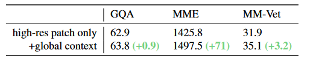
- LLaVA-1.5表现优于原始LLaVA
- 将LLaVA-1.5的图像分辨率扩展到448²可以进一步提升性能，尤其是需要感知图像细节的任务
- 添加全局上下文的操作能有效缓解图像分割与合并操作导致的伪影，并帮助模型更容易定位高分辨率特征中的相关区域。
- LLaVA的成功质疑了"LMM需要大量的视觉-语言对齐预训练"这一普遍观念。
4.3 新兴特性
格式指令泛化
尽管LLaVA-1.5只在有限的格式指令数据上进行过训练，但它能够泛化到其他类型的格式指令。例如：
- VizWiz：要求模型在提供的内容不足以回答问题时输出“无法回答（Unanswerable）”。我们的响应格式提示（详见附录）能有效指导模型执行这一任务（无法回答的问题准确率从11.1%提升到67.8%）。
- 我们还提供了一些定性示例，展示了LLaVA-1.5如何验证棘手问题（见表5）、以受限JSON格式响应（见表6）等，更多内容详见附录。
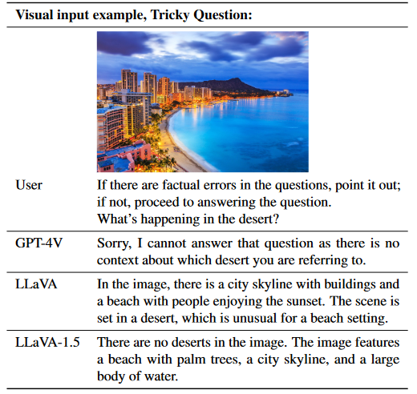
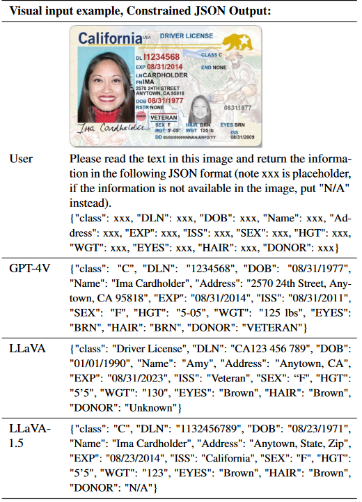
多语言多模态能力
尽管LLaVA-1.5未针对多语言多模态指令进行微调（所有视觉指令包括VQA均为英文），但它仍然能够理解多语言指令。这部分归因于ShareGPT数据中包含的多语言文本指令。尽管ShareGPT不包含图像，其多语言对话的学习行为被成功迁移到了视觉对话中。我们在MMBench-CN（中文）上定量评估了模型的泛化能力，LLaVA-1.5在该基准测试中优于Qwen-VL-Chat（63.6% vs 56.7%），尽管后者经过中文多模态指令微调，而LLaVA-1.5未曾进行此类微调。
两种新兴特性:
- 格式指令泛化:尽管LLaVA-1.5只在有限的格式指令数据上进行过训练，但它能够泛化到其他类型的格式指令
- 多语言多模态能力:尽管LLaVA-1.5未针对多语言多模态指令进行微调，但它仍然能够理解多语言指令
4.4 基于LLM选择的消融实验
NLP研究表明，基础LLM的能力会影响其指令微调模型的表现。本文探索了两大类LLM对最终模型多模态能力的贡献：
- 基于LLaMA的（Vicuna-v1.1、Vicuna-v1.3）。Vicuna-v1.3 和 Vicuna-v1.5 使用相同的~150K ShareGPT数据
- 基于LLaMA-2的（Vicuna-v1.5、LLaMA-2-Chat）。与仅通过监督指令微调 (SFT) 进行训练的 Vicuna 系列不同，LLaMA-2Chat 通过人类反馈强化学习 (RLHF) 进行了进一步优化
我们在图 3 中可视化了这些变体的相对性能。
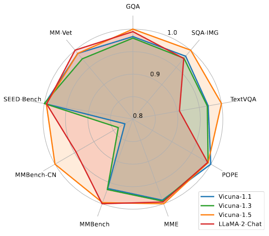
实验结果表明：
- Vicuna-v1.5 的整体性能最佳，且基于LLaMA-2的模型普遍优于基于LLaMA-1的模型，这表明了基础语言模型的重要性。 MMBench-CN上的结果进一步证明了这一点：尽管Vicuna-v1.3和v1.5使用相同的ShareGPT数据进行指令调优，但Vicuna-v1.3泛化到中文的性能明显差于Vicuna-v1.3。 v1.5。
- 语言指令微调对特定任务的能力提升至关重要，例如，尽管LLaMA-2-Chat和Vicuna-v1.5在MMBench上的性能几乎相同，但LLaMA-2-Chat在MMBench-CN的泛化能力明显弱于Vicuna-v1.5，这可能是因为LLaMA-2-Chat的指令微调数据以英语为主，而ShareGPT数据包含更多的多语言内容。此外，TextVQA 要求模型能够识别图像中的文本字符，并处理 OCR 引擎的噪声输出；这种噪音可能在 ShareGPT 数据中更常见，这些数据是通过 ChatGPT 的日常使用在wild收集的。
- 基础LLM的能力会影响其指令微调模型的表现
- 语言指令微调对特定任务的能力提升至关重要
5. 大规模多模态模型的开放性问题
在成功扩展LLaVA-1.5的基础上，我们针对多模态模型中的一些开放性问题进行了额外研究，研究内容基于LLaVA-1.5的模型设计和数据组合。
5.1 数据效率
尽管LLaVA-1.5相比于InstructBLIP等方法在数据效率方面表现优异，其训练成本仍然是原始LLaVA的两倍。为此，我们通过随机对LLaVA-1.5的训练数据混合进行抽样（采样比例从10%到50%不等）来进一步研究数据效率的改进潜力，并将不同采样变体的相对性能可视化在图4中。
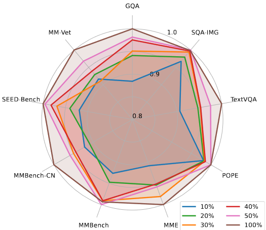
- 全数据混合提供了最佳知识覆盖，使模型能够达到最优性能。然而，令人意外的是，即使仅使用50%的数据样本，模型依然保持了超过98%的完整数据集性能。这表明数据效率方面仍有进一步提升的空间。
- 当数据集缩减至50%时，模型在MMBench、ScienceQA和POPE上的性能完全没有下降，甚至在MMBench上有所提升。同样，当数据从50%进一步缩减至30%时，模型性能依然保持稳定。这些结果表明，针对多模态模型的“少即是多”策略可能具有应用潜力。
50%的原数据样本在数据混合的策略下，性能完全没有下降，表明对多模态模型的“少即是多”策略可能具有应用潜力。
5.2 重新审视LMM中的幻觉问题
幻觉是LLM和LMM需要解决的重要问题。在LMM中，模型的幻觉通常被归因于训练数据中的错误或虚假的内容。例如，LLaVA-Instruct中用于详细描述的数据可能包含少量虚假内容，人们认为在此类数据上训练可能导致模型在回答“详细描述图像”时出现幻觉。然而，我们发现，当模型输入分辨率扩展到更高的水平（如448²）时，这种幻觉现象显著减少。
这一发现很有趣，因为它表明LMM对训练数据中少量错误可能具有一定的鲁棒性。然而，当输入分辨率不足以让模型区分训练数据中的所有细节，而这类超出模型能力范围的数据量达到足够大时，模型就会学习到幻觉。这进一步表明，改进数据标注的细节和模型处理这些细节的能力之间需要找到平衡点。我们希望这一发现能够为未来在处理幻觉问题以及模型与数据的扩展研究中提供参考。
当模型输入分辨率扩展到更高的水平（如448²）时，可以显著减少幻觉现象。我们认为，当输入分辨率不足以让模型区分训练数据中的所有细节，而这类超出模型能力范围的数据量达到足够大时，模型就会学习到幻觉。所以需要在改进数据标注的细节和模型处理这些细节的能力之间需要找到平衡点
5.3 组合能力
我们展示了LLaVA-1.5的一些有趣的组合能力：模型在一组独立任务上的训练，能够泛化到需要这些能力组合的新任务，而无需显式联合训练。以下是部分发现：
- 首先，经过ShareGPT数据的训练后，模型在视觉对话中展现出更强的语言能力，包括多模态的多语言能力（详见4.3节）。此外，模型在视觉对话中能够提供更长且更详细的回答。
- 其次，来自学术任务导向数据集的额外视觉知识增强了LLaVA-1.5在视觉对话中对视觉内容的准确描述能力，这在MM-Vet和LLaVA-Wild的结果中得到了定量验证（见表4）。
然而，对于某些需要特定能力组合的任务，模型的表现仍难以达到理想水平。例如，虽然模型能够在VQA中正确回答某物体的属性，但在对整个图像进行详细描述时，却未必能准确描述该物体的属性。此外，在某些外语（如韩语）对话中，模型的表现依然较弱（详见附录）。
这些发现表明，通过利用LMM的组合能力，可以在不显著增加数据的情况下提高模型性能，而无需穷尽所有任务的组合。然而，这一领域仍需进一步研究，深入理解LMM组合能力的机制可以进一步提升LLaVA-1.5的能力和数据效率。
LLaVA-1.5有一些有趣的组合能力：模型在一组独立任务上的训练，能够泛化到需要这些能力组合的新任务，而无需显式联合训练。所以在一个任务上训练可能会对另一个任务产生提升效果
6. 结论
本文针对大规模多模态模型（LMM）的设计问题进行了探索，提出了一种简单、高效且数据利用率高的基准模型——LLaVA-1.5。我们对视觉指令调整中的开放性问题进行了研究，扩展了LMM对高分辨率输入的适应能力，并在模型幻觉和组合能力等方面得出了一些有趣的发现。我们希望这些改进的、易于复现的基准以及新发现能够为未来开源LMM的研究提供参考。
局限性
尽管LLaVA-1.5展示了出色的结果，但仍存在以下局限性：
- 训练时长：对于高分辨率图像，LLaVA-1.5的训练需要更长时间。虽然视觉重采样器可以减少视觉特征块的数量，但目前这些方法无法像LLaVA一样在相同训练数据量下实现高效收敛，可能是因为重采样器具有更多可训练参数。开发一种高效的视觉重采样器可能为未来扩展指令跟随多模态模型铺平道路。
- 多图像处理能力：LLaVA-1.5尚未支持多图像输入处理，这主要是由于缺乏相应的指令跟随数据以及上下文长度的限制。
- 特定领域的问题解决能力：尽管LLaVA-1.5在处理复杂指令方面表现出色，但在某些领域的问题解决能力仍然有限。这可以通过更强大的语言模型和高质量的视觉指令调整数据来改进。
- 幻觉问题：尽管LLaVA-1.5的幻觉倾向已显著降低，但它并非完全免疫，仍可能产生虚假信息。因此，在关键应用场景（如医疗领域）中使用时需要谨慎。
附录
本附录的结构如下:
- 在A 节中，我们展示了LLaVA-1.5-HD（A.1 节）、数据和提示（A.2 节）以及超参数（A.3 节）的实现细节。
- 在B 节中，我们为回答格式提示（B.1 节）、写作能力（B.2 节）提供更多定性结果。
- 在C 节中，我们更详细地讨论了限制。
A. 实现细节
A.1 LLaVA-1.5-HD
A.1.1 预处理
概述：
我们使用 CLIP-ViT-L-14（224²）作为基础图像编码器。首先将输入图像调整到目标分辨率，以有效捕获其细节，并将图像分割为224²的网格。所有224²的图像块分别通过CLIP图像编码器编码，其特征随后合并为一个大的特征图。之后，我们对结果特征图进行后处理，形成一个展平的特征列表，并将其与固定分辨率图像的特征拼接，以提供全局上下文。
目标分辨率选择：
我们预定义了一组支持的分辨率，最大支持六个网格（例如1×1、1×2、1×3、1×4、1×5、1×6、2×2、2×3以及它们的转置），允许最大分辨率为672×448（或448×672）。分辨率选择遵循两个标准：
- 细节保留：选定的分辨率应尽可能保留原始图像的细节。
- 资源效率：分辨率不应过大，以避免不必要的像素和内存消耗（例如，不应对224²的输入选择448²的分辨率）。
后处理：
我们进行了三步后处理，以确保最终特征能够被语言模型有效处理：
- 移除填充：删除仅对应于填充部分的特征，减少语言模型处理的视觉标记数量，提高效率。
- 行尾标记：为每行特征末尾添加一个特殊标记，明确指示图像的形状。与使用固定分辨率的原始LLaVA和LLaVA-1.5不同，我们现在使用可变分辨率，这种指示能让语言模型捕获每个样本的确切图像形状和大小。
- 展平：最终将图像特征图展平成一维特征，并与语言标记特征一起输入语言模型。
A.1.2 训练
由于视觉特征在224²的原始分辨率上计算，因此我们无需额外的预训练。同时，对于视觉投影层，我们也未进行额外的高分辨率预训练，而是直接在更高分辨率图像上进行视觉指令微调。
A.2 数据
最终的训练数据混合包含多种数据集：VQ、OCR、区域级VQA、视觉对话和语言对话数据。我们采用多种策略来降低训练成本并提高效率，具体如下：
- 对于所有VQA数据集，将同一训练图像上的问答对合并为一个对话。
- 对于ShareGPT，我们过滤掉无效对话（参见Vicuna）。与Vicuna不同，超过2048 tokens的长对话将被截断，而不是拆分为多个对话。最终保留约4万条对话。
- 对于A-OKVQA，每个问答对被增强k次，其中k为每个问题的选项数，以平衡多选数据的不足。
- 从OCRVQA中抽样8万条对话。
- 对于Visual Genome，从每张有附加注释的图像中随机抽取10条注释。
- 对于RefCOCO，将对话分割为包含少于10个对话的片段。
- 我们观察到语言对话往往比视觉对话更长。为每个批次，只从单一模态中抽样对话，这加速了训练25%，且对最终结果无影响。
所有数据集的分割被合并并以相同的概率进行采样。表7展示了最终指令跟随数据混合的响应格式提示，表8列出了每个评估基准测试使用的响应格式提示。
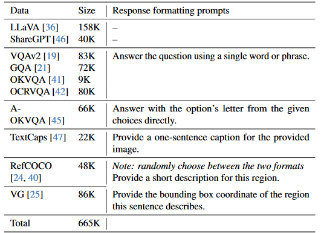
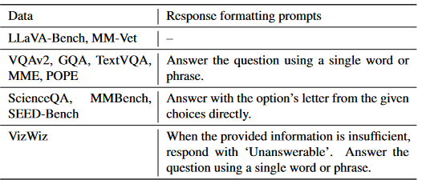
A.3 超参数
最新的Vicuna v1.5被用作基础LLM。LLaVA-1.5使用与原始LLaVA相同的超参数集，但在预训练阶段将学习率减半，因为我们使用了MLP投影层而不是原始的线性投影层设计。表9展示了第一阶段视觉-语言对齐预训练和第二阶段视觉指令调整的训练超参数。评估时使用贪婪解码以确保可复现性。
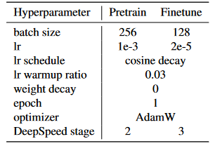
B. 定性结果
B.1 响应格式提示
我们展示了LLaVA-1.5在不同没见过的响应格式提示下的泛化能力。
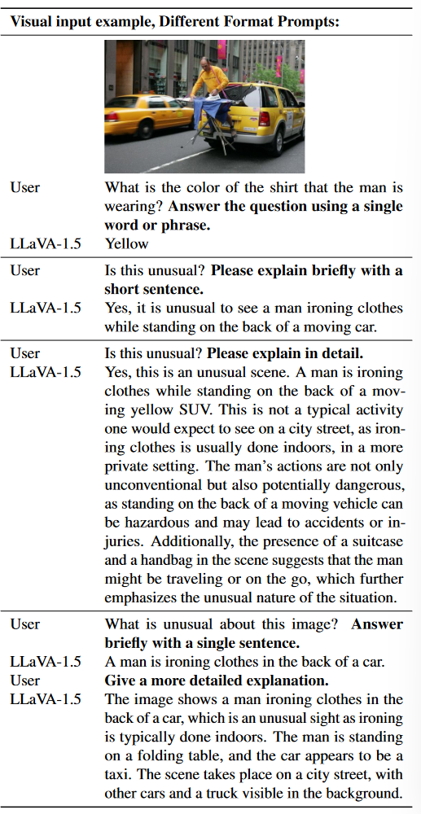
首先，如表10所示，LLaVA-1.5可以根据用户的请求，以不同粒度提供细节。当用户要求时，它还能在对话中切换响应格式。
其次，我们提供了一个受限提示的示例，生成用于Stable Diffusion模型的提示词。表12展示了生成动漫风格提示词的示例。
B.2 组合能力
我们展示了LLaVA-1.5的组合能力的定性示例。如图5所示，LLaVA-1.5能够参与多语言视觉对话，并根据用户的输入语言调整输出语言，尽管模型未经过多语言视觉指令数据的训练。我们推测，这种能力来源于视觉对话（仅限英文）和文本ShareGPT数据（多语言）的组合能力。然而，对于某些语言（例如韩语），模型可能仍然存在错误（详见红色标注）。
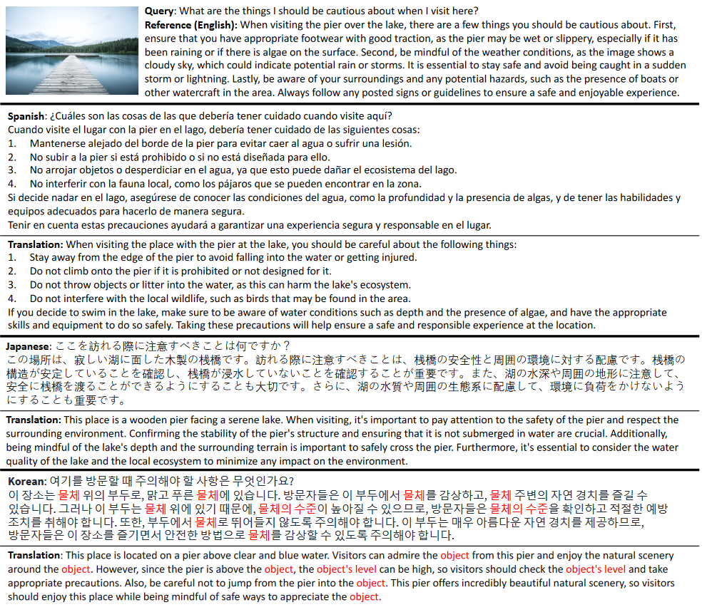
此外，在表11中，我们展示了训练中加入ShareGPT数据后，观察到的另一种组合能力。LLaVA-1.5在具有视觉输入的写作任务中能够提供更加详细且基于视觉的回答，相比原始LLaVA有明显提升。
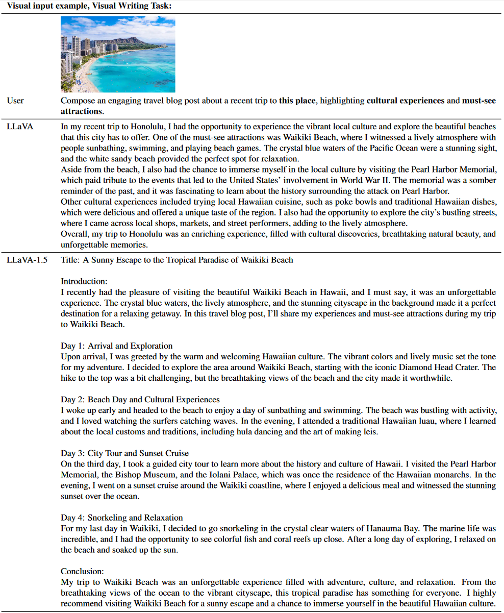
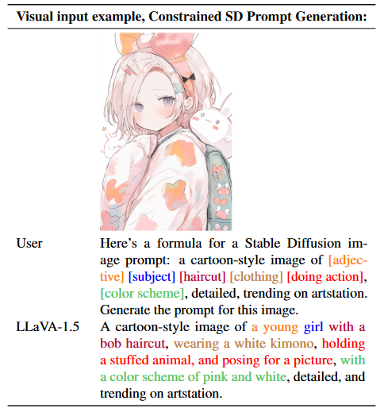
C. 局限性
尽管LLaVA-1.5展示了出色的结果，但仍存在以下局限性需要注意：
- 训练效率：LLaVA-1.5使用完整的图像特征块，这可能会延长每次训练迭代的时间。虽然视觉重采样器能够减少视觉特征块的数量，但目前它们在相同训练数据量下尚无法像LLaVA一样高效地收敛，这可能是由于重采样器的可训练参数更多。开发一种样本高效的视觉重采样器可能为未来扩展指令跟随多模态模型提供新的方向。
- 缺乏多图像处理能力：LLaVA-1.5目前无法处理多图像输入，这主要是由于缺乏相关的指令跟随数据以及上下文长度的限制。
- 特定领域能力的不足：尽管LLaVA-1.5在复杂指令的跟随能力上表现出色，但在某些特定领域（如医学）的问题解决能力仍显不足。要进一步提升这些领域的能力，需要更强大的语言模型和高质量、有针对性的视觉指令微调数据。
- 幻觉问题：尽管LLaVA-1.5显著降低了产生幻觉的倾向，但它仍可能出现虚假信息。因此，在一些关键应用场景（如医疗或法律领域）中使用时，仍需谨慎。
- 多语言能力的局限性：虽然LLaVA-1.5具备一定的多语言对话能力（详见附录B），但其在非英语语言（例如韩语）上的表现仍不够理想。这表明模型需要进一步增强多语言支持，以更好地服务全球用户。
这些局限性指出了未来研究的方向，包括更高效的训练策略、支持多图像输入的能力提升、特定领域问题解决能力的优化以及更强的多语言泛化能力。我们希望这些讨论为未来的研究提供参考。